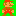
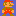

Lab 06: Green-Screening
In today’s lab, you will implement “Green Screening”, which is where two images are combined by replacing all of the green pixels of one image with the second one. Here’s an example of green screening in action.
Specifically, you’ll be writing programs that read and write bitmap images (stills) in the bmp format. As this is a binary format (as opposed to text-based), you’ll first have to learn a little bit of how binary data is written and read in C. This is what happens all the time in writing low-level drivers and device controllers too, so it’s pretty useful stuff and worth getting some practice in.
1 Background
1.1 Binary files
BMP is an image format that was developed by Microsoft in the 1980’s when Windows looked like this:
In fact, the image above is itself a bitmap that you can download. BMP is a binary format, meaning that if you try to look at that file in a text editor, you’ll just see a bunch of weird characters.
{kind=link}
Instead, you have to use a hex editor to look at the data. The simplest tool for this on your lab machine or VM is hd (for “hexadecimal dump”), which will show each byte of the file, 16 bytes per line.
Tips:
Use
hd somefile.bmpto see the bytes of a bitmap fileEach byte is written as two hexidecimal (base 16) characters. So for example, a byte
5emeans decimal value94, computed according to the formula \[\mathtt{'5e'} = \mathtt{'5'}\cdot 16 + \mathtt{'e'} = 5\cdot 16 + 14 = 94\]Some BMP files are big, so running
hxwill show a lot of lines. You can pipe the output through the programlessto be able to scroll through it, with a command line such ashd myimagefile.bmp | lessNote: hit up/down to scroll through the data, and type
qto quitlessand get back to the command line.To compare two binary files and see if they’re exactly the same, you can use the
diffcommand like this:diff -qc file1.bmp file2.bmpIf you want to see where the files are different, you can use
diffin conjuction withhd, like this:diff <(hd file1.bmp) <(hd file2.bmp)
1.2 BMP files
The BMP format specification contains many options and variants, but for this lab we’ll focus on one specific version, described below.
A BMP file starts with a 54-byte header, which starts with a 14-byte file header and then a 40-byte image header. There are many settings in these header bytes, most of which you won’t have to worry about. The most important part of the header (for your purposes) are that it indicates the height and width of the image, in terms of number of pixels.
After the 54-byte header, the rest of the file consists of indications of each pixel’s color. Each color is given as a series of three bytes, indicating the red, green, and blue concentration values of that pixel, also known as the RGB value. Since each concentration is a single byte, they will be represented as integers between 0 and 255.
There is one somewhat unusual feature of BMP files - everything is backwards. First, each pixels RGB color values are stored in reverse byte order: first the blue byte, then green, then red. The second backwards thing is that the pixels themselves are stored row by row, left to right and bottom to top. So the very first pixel is the bottom-left of the image, and the last pixel is the top-right.
1.3 Writing and reading binary in C
All of the functions you know so far such as fprintf and fscanf are only meant to work on text files or streams. To open a binary file, you should add the b character to the “mode” given to fopen, such as:
FILE* in = fopen("inputfile.bmp", "rb");
FILE* out = fopen("outputfile.bmp", "wb");The stdio.h library has two functions that can be used to read or write binary data:
void fread(void* data, int size, int count, FILE* stream);
void fwrite(void* data, int size, int count, FILE* stream);(These are not exactly the correct function signatures that you can find here and here, but they are close enough for our purposes.)
A few things to know about fread and fwrite are:
- Type
void*basically means “pointer to anything”. So the first argument could point to an int, or to a char, or anything else. But it really has to be a pointer! - The
sizefield is the number of bytes in whatever type is pointed to, like 4 bytes for anintor 1 byte for achar. In fact, C has a convenient built-in operator for this calledtypeof; for exampletypeof(int)equals 4 on your lab machines or VMs. - The
countfield for our purposes will always be 1. (It could be more if you had arrays, but we haven’t learned array yet.) - The
streamis an input or output stream, as appropriate.
1.4 Starter code and files
I am giving you some small C programs and example image files to get started for this lab:
{kind=link}
{kind=link}
{kind=link}
{kind=link}
{kind=link}
You can get all these files at once by downloading the file starter.tar.gz and running tar xzvf starter.tar.gz
2 Replacing the green
For the first part of your lab, you will write a program replace.c that reads in the name of an input bmp file and an output bmp file, and copies the input file to the output file, replacing each green pixel with a different color.
To help you get started, check out the two programs makeyellow.c and testyellow.c, which (respectively) make an image filled with pure yellow pixels, and read an image and count how many pixels are yellow.
Your replace.c program will need to do something very similar to makeyellow.c and testyellow.c combined, since it has to read in a file and create a bmp file too. So mostly what you want to do in this step is copy and combine those two programs into one.
You should keep all the existing functions in those files, and make some new functions to make your code stay nice and organized! I recommend writing the following four functions for this part:
// read all 54 bytes of the bmp header and save the
// width and height values to first two pointers
void read_bmp_head(int* wptr, int* hptr, FILE* in);
// write all 54 bytes of the bmp header with specified
// width and height
void write_bmp_head(int width, int height, FILE* out);
// read in the 3 bytes for a single pixel, saving the RGB
// values into the three pointers
void read_color(int* rptr, int* gptr, int* bptr, FILE* in);
// write out the 3 bytes for a single pixel
void write_color(int red, int green, int blue, FILE* out);Here’s how your program should work:
roche@ubuntu$./replaceInput file:mario.bmpOutput file:mblue.bmpReplacement color values (RGB):100 100 200Image saved to mblue.bmp
The example run above turns the green pixels (red=0, green=255, blue=0) in the mario.bmp file  into a light blue color specified by (red 100, blue 100, green 200), producing the file mblue.bmp .
{kind=link}
Here’s another example run based on the awesomo.bmp file:
roche@ubuntu$./replaceInput file:awesomo.bmpOutput file:apink.bmpReplacement color values (RGB):255 192 203Image saved to apink.bmp
The resulting apink.bmp file looks like this:
{kind=link}
3 Green Screen
Now write a program background.c that reads in two input files: a “foreground file” that contains some green pixels, and a “background file” with the same dimensions. You’ll then create a new output bmp file that is the same as the foreground image, except every green pixel is replaced by the corresponding pixel from the background image.
You might want another function or two to help keep your code organized, easy to maintain, and easy to follow.
Example run:
roche@ubuntu$./backgroundForeground file:mario.bmpBackground file:smallbg.bmpOutput file:m2.bmpImage saved to m2.bmp
Which turns mario.bmp into m2.bmp .
{kind=link}
Another example run:
roche@ubuntu$./backgroundForeground file:awesomo.bmpBackground file:usna.bmpOutput file:robotmid.bmpImage saved to robotmid.bmp
Which combines awesomo.bmp and usna.bmp to make robotmid.bmp:
{kind=link}
4 Offset (going further)
The biggest limitation of your background.c program from the previous part is that the foreground and background images have to be exactly the same size. So let’s fix that!
You’ll create a program offset.c that, after reading the foreground and background filenames, also reads in an (x,y) position offset of where the foreground image should show up on the background. The size of the output image will always be the same as the background image size, but the foreground image (with proper green-screening!) will be shifted within the background according to the given offset.
For example, an offset of (100,200) would start the foreground image 100 pixels to the right and 200 pixels up from the bottom-left of the background. An offset of (0,0) would be the same as the previous part.)
For example, here’s how to put Mario in space:
roche@ubuntu$./offsetForeground file:mario.bmpBackground file:space.bmpEnter offset (XY):100 150Output file:mspace.bmpImage saved to mspace.bmp
which results in mspace.bmp:
{kind=link}
The trickiest part here is that the foreground image might go outside of the bounds of the background image. If that’s the case (for example, because of negative offset values or the foreground is too large), then you should ignore the foreground pixels that are out of the range. For example:
roche@ubuntu$./offsetForeground file:awesomo.bmpBackground file:windows1.bmpEnter offset (XY):200 -100Output file:awin.bmpImage saved to awin.bmp
which results in awin.bmp:
{kind=link}